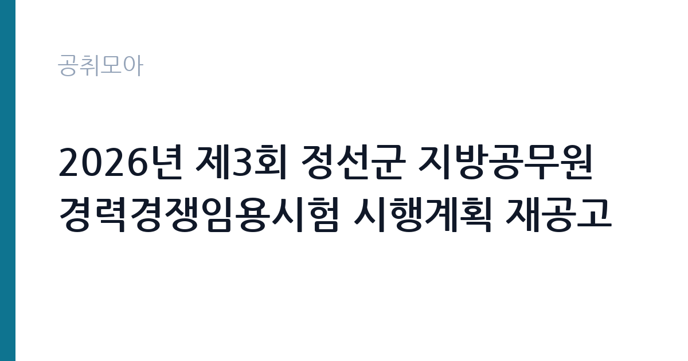

[지자체] 2026년 제3회 정선군 지방공무원 경력경쟁임용시험 시행계획 재공고
강원특별자치도 정선군 · 강원 · 마감 2026-11-10 (D-8) · 출처 나라일터

한눈에 보는 모집 조건
| 기관 | 강원특별자치도 정선군 |
|---|---|
| 공고명 | 2026년 제3회 정선군 지방공무원 경력경쟁임용시험 시행계획 재공고 |
| 고용형태 | 정규직 |
| 근무지 | 강원 |
| 게시일 | 2026-11-02 |
| 마감일 | 2026-11-10 (D-8) |
지원자격, 이렇게 읽으세요
- 공업9급(자원) 1명
- 접수 ~2026-11-10 마감
- 세부 조건은 원문 공고문 확인
정규직 채용은 기간의 정함이 없는 근로계약을 전제로 합니다. 수습 기간을 두고 평가한 뒤 정규직으로 확정하는 절차가 일반적이며 기관의 인사 규정과 임금 체계를 적용받습니다. 이번 공고는 강원특별자치도 정선군에서 직접 진행하는 자체 전형으로, 응시자격과 제출서류는 공고문에 항목별로 제시됩니다. 경력경쟁임용은 공개경쟁과 달리 해당 직렬의 자격증이나 경력을 요건으로 삼습니다. 공업직은 관련 기술 자격증을, 전산직은 정보처리 관련 자격이나 경력을 요구하며, 요건은 공고문의 직렬별 표에 정리되어 있습니다. 학력 제한은 없지만 자격 요건을 충족하지 못하면 응시 자체가 반려됩니다. 연령과 병역, 결격사유 확인이 함께 이뤄지고, 임용 후에는 수습 기간이 적용됩니다. 서류는 접수 마감 이후 보완이 되지 않으므로 자격 요건과 증빙 서류를 마감 전에 모두 갖춰야 합니다. 공고문에 명시된 우대 사항은 해당 여부를 확인해 증빙을 첨부해야 가점이 반영됩니다. 자격증은 유효 기간과 등록 상태를 확인해야 합니다. 갱신이 필요한 자격이라면 갱신 여부를 먼저 점검하십시오.
이 공고의 포인트
이 공고의 첫 번째 포인트는 고용 형태입니다. 수습 기간 평가를 통과하면 기간의 정함이 없는 신분이 되어 고용이 안정됩니다. 두 번째는 업무 범위가 명확하다는 점입니다. 지방공무원 기술직(경력경쟁임용) 직무로 채용되므로 배치 이후 담당 업무가 크게 흔들리지 않습니다. 세 번째는 근무지입니다. 강원 지역 근무로 수도권 공고에 비해 지원자 분포가 넓지 않아 상대적으로 경쟁이 분산되는 경우가 있습니다. 자격 요건이 까다롭지 않은 대신 지원자가 몰리는 유형의 공고입니다. 다만 선발 인원이 1명으로 많지 않아 자격을 갖춘 지원자가 몰리면 경쟁률이 높아질 수 있습니다.
전형은 어떻게 진행되나
전형은 서류심사와 면접심사를 기본으로 하고 직무에 따라 필기나 실기, 체력검정이 추가됩니다. 서류 단계에서는 응시자격 충족 여부와 제출서류 형식을 확인하며 이 단계에서 탈락하는 지원자가 적지 않습니다. 면접은 직무 이해도와 경험을 확인하는 방식으로 진행되고 발표는 개별 통보나 홈페이지 게시로 이뤄집니다. 최종합격 이후에는 결격사유 조회와 채용 신체검사가 이어지며 이 절차에서 문제가 확인되면 합격이 취소될 수 있습니다. 구체적인 전형 단계와 배점은 공고문에 표로 정리되어 있으니 원문을 기준으로 준비하십시오. 자격증 취득 예정자로 지원했다면 취득 증명 제출 기한을 반드시 지켜야 합니다.
이런 분께 추천해요
- 해당 직렬의 자격 요건을 충족하는 분
- 시설·설비 또는 정보시스템 실무 경험이 있는 분
- 공무원 복무 규정을 준수할 수 있는 분
지원 전 체크리스트
- 응시자격 요건과 경력 기준을 충족하는가 — 경력은 증명서로 입증해야 합니다
- 수습 기간과 정규직 전환 조건을 확인했는가
- 제출서류 목록을 모두 준비했는가 — 누락 시 서류 단계에서 탈락합니다
- 접수 마감 2026-11-10 이전에 접수 방식을 확인해 제출했는가
모집 일정과 제출 타이밍
접수 마감은 2026-11-10이고 공고는 2026-11-02에 게시되었습니다. 준비 기간 8일 안에 서류 작성, 증빙 발급, 접수를 모두 마쳐야 하므로 주말을 포함해 일정을 미리 나누는 것이 좋습니다. 특히 경력 기술서나 직무수행계획서를 요구하는 공고는 작성에 시간이 걸리므로 첫날 초안을 잡으십시오. 서류 합격자 발표와 면접 사이 간격이 짧은 경우가 많아 면접 예상 질문은 서류 제출 전에 정리해 두는 편이 유리합니다. 마감 직전에는 접속이 몰리므로 여유를 두고 제출하십시오. 제출 서류는 공고문에 적힌 순서대로 정리하면 담당자가 확인하기 쉬워 누락이 줄어듭니다. 강원 근무지는 계절별 업무량 차이가 커서 성수기 근무 조건을 확인하는 것이 좋습니다. 마감까지 2주 안팎이 있어 준비할 시간은 있지만 미루면 촉박해집니다. 선발 인원이 한두 명 수준이라 지원자 개개인의 서류 완성도가 그대로 평가에 반영됩니다.
직무 이해하기: 지자체
지방자치단체는 지역 행정과 복지, 시설 운영을 담당합니다. 부서별로 사업을 수행하고 결원이나 신규 사업에 따라 임기제와 기간제 인력을 채용합니다. 조례와 자체 인사 규정에 따라 채용 절차가 진행됩니다. 지방공무원 기술직은 시·도교육청과 자치단체에서 시설과 장비, 정보시스템을 관리하는 직렬입니다. 공업직은 전기·기계·토목·건축 같은 시설 설비의 유지보수와 공사 감독을 맡고, 전산직은 정보시스템 운영과 유지관리, 보안 업무를 담당합니다. 경력경쟁임용으로 채용되면 담당 부서에 배치되어 계약·검사·점검 업무부터 시작합니다. 학교나 청사 시설을 관리하는 경우 방학과 공사 일정에 업무가 몰립니다. 공무원 신분이므로 복무 규정과 이해충돌 방지 의무가 적용됩니다. 업무는 혼자 처리하기보다 부서 단위로 나눠 진행되므로 담당 구역과 협업 범위를 입사 초에 확인하는 것이 중요합니다. 업무 매뉴얼과 지침이 문서로 정리되어 있어 절차를 익히면 반복 업무는 빠르게 손에 붙습니다.
자기소개서 작성 팁
지원서는 직렬 자격과 실무 경험을 연결하는 것이 핵심입니다. 보유 자격증과 취득 과정, 자격을 활용해 수행한 업무를 구체적으로 쓰십시오. 시설 점검이나 공사 감독, 시스템 운영에서 문제를 발견해 처리한 사례가 좋은 소재입니다. 공직에 지원하는 이유를 기관의 사업과 연결해 한 문단으로 정리하십시오. 문항별 글자 수 제한을 먼저 확인하고, 각 문항의 첫 문장에 결론을 배치하는 방식이 읽기 쉽습니다. 지원 동기는 기관의 어떤 사업에 기여하겠다는 한 문장으로 시작하고, 이어서 본인의 경험을 근거로 붙이십시오. 감점을 피하려면 다른 기관에 보낼 수 있는 범용 문장을 그대로 쓰지 않는 것이 중요합니다. 기관 이름과 사업명이 문장 안에 자연스럽게 들어가야 준비도가 드러납니다.
면접 준비 포인트
면접에서는 직렬별 실무 이해도를 확인합니다. 시설 설비의 이상을 발견하면 어떤 순서로 조치하고 보고할지, 공사 감독 중 시공사가 설계와 다르게 시공하면 어떻게 대응할지 묻습니다. 공무원으로서 중립과 청렴을 어떻게 지킬지에 대한 질문도 나옵니다. 자격증 취득 과정과 실무 적용 경험을 구체적으로 답하십시오. 답변은 상황, 판단, 조치의 순서로 정리하면 전달이 분명해집니다. 모르는 질문에는 모른다고 밝히고 확인 방법을 제시하는 편이 억지 답변보다 낫습니다. 마지막에는 근무 의사와 함께 2026-11-10 이후 일정에 언제든 응할 수 있다는 점을 전달하십시오. 마지막 질문 시간에는 근무 조건에 대한 확인 사항을 한 가지 정도 준비해 가면 성실성이 드러납니다.
급여·근무조건 읽는 법
지방공무원은 「지방공무원 보수규정」 제4조제3항에 따라 국가공무원과 같은 별표를 준용하므로, 2026년 9급 1호봉 봉급은 월 2,133,000원, 8급 1호봉은 2,162,100원, 7급 1호봉은 2,317,100원입니다(인사혁신처 「공무원 보수규정」 별표 3, 2026년 시행). 여기에 정액급식비·직급보조비·정근수당·명절휴가비가 더해지고, 인사혁신처가 발표한 2026년 9급 초임 보수(봉급+수당)는 연 3,428만 원 수준입니다. 병역 등 인정 경력이 있으면 초임 호봉이 올라갈 수 있습니다. 다만 강원특별자치도 정선군의 보수 수치는 이 글에서 확인된 공시 자료가 없어 추정해 제시하지 않았습니다. 공고문 처우 항목과 첨부된 보수표를 기준으로 확인하십시오. 알리오 2025년 결산 공시 기준 공공기관 전체 일반정규직 1인당 평균보수는 7,376만 9천원, 신입사원 평균초임은 4,031만 6천원입니다(무기계약직 미포함). 2026년 적용 최저임금은 시급 10,320원, 월 환산 2,156,880원(주 40시간·209시간 기준)입니다. 고용노동부 고시 제2025-47호로 확정된 금액입니다. 공고문에 금액이 제시되지 않은 항목은 원문 보수표나 처우 설명에서 확인해야 하며 확인되지 않은 수치는 쓰지 않는 것이 원칙입니다. 비교할 때는 월 급여뿐 아니라 상여·명절휴가비·복지포인트·초과근무수당까지 포함한 연간 총액으로 계산하십시오. 기간제라면 계약 기간 동안의 총액을, 무기계약이라면 호봉 상승과 정년까지의 누적 소득을 기준으로 판단하는 편이 정확합니다.
자주 묻는 질문
- 선발 인원은 몇 명인가요?
공고문 기준 1명입니다. 직종별로 인원이 나뉘는 경우가 있으니 모집분야 항목을 함께 확인하십시오. - 근무지는 어디인가요?
강원 지역의 강원특별자치도 정선군 소속 근무지입니다. 세부 주소와 출퇴근 조건은 원문 공고문에서 확인할 수 있습니다. - 보수는 얼마인가요?
채용 신분(정규직)과 기관 임금 규정에 따라 정해지며 구체적인 금액은 공고문 처우 항목에 제시됩니다. 금액이 공개되지 않은 경우에는 원문의 보수표를 확인하십시오.
함께 보면 좋은 공고
[지자체] 2026년 제6회 고성군 임기제공무원 임용시험 공고 — 마감 2026-11-12[지자체] 아산시 보건소장 개방형직위 임용시험 시행계획 재공고 — 마감 2026-11-13[지자체] 군포시 자치분권과장(개방형직위) 임용시험 공고 — 마감 2026-11-20출처: 나라일터 공개정보를 바탕으로 공취모아가 정리한 안내글입니다. 모집 조건·일정은 변경될 수 있으니 지원 전 반드시 원문 공고문을 확인하세요. 본 글은 정보 제공용이며 합격을 보장하지 않습니다.